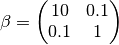

HINT 1: Risk groups¶
This tutorial is a simple simulation using risk groups to investigate the disease spread between heterogeneous groups. The tutorial uses EMOD’s HINT feature and sets up 2 risk groups (Low, High) with the level of risk associated with disease transmission.
By default, the disease transmission for a EMOD generic simulation is frequency-dependent. The
expected number of secondary infections from an infected person does not change with population
size. HINT uses a “who-acquires-infection-from-whom” (WAIFW) matrix with  values that define the force of infection between the risk groups.
values that define the force of infection between the risk groups.
Contents
Demographics inputs¶
In the demographics input file, the node has 10,000 individuals. There are no births and deaths.
The birth rate and initial population values are set by BirthRate and InitialPopulation, respectively, in NodeAttributes. The death rate is set in IndividualAttributes using the MortalityDistribution attribute. The ResultValues matrix in MortalityDistribution contains the death rates for males and females. Both the male and female death rate is equal to 0.
{
"Metadata": {},
"Defaults": {
"IndividualProperties": {}
},
"Nodes": [{
"NodeID": 340461476,
"NodeAttributes": {
"InitialPopulation": 10000,
"BirthRate": 0.001
},
"IndividualAttributes": {
"MortalityDistribution": {
"NumDistributionAxes": 2,
"AxisNames": ["gender", "age"],
"AxisUnits": ["male=0,female=1", "years"],
"AxisScaleFactors": [1, 365],
"NumPopulationGroups": [2, 1],
"PopulationGroups": [
[0, 1],
[0]
],
"ResultUnits": "annual deaths per day",
"ResultScaleFactor": 1,
"ResultValues": [
[0.001],
[0.001]
]
}
}
}]
}
You can view the complete hint_riskgroups_demographics file at <path_to_directory>RegressionScenariosInputFiles where <path_to_directory> is the location where EMOD source files were installed.
IndividualProperties¶
For HINT, IndividualProperties must be added to Defaults in the demographics file and
contain a TransmissionMatrix. The TransmissionMatrix is configured with the
values of the WAIFW matrix that are needed for HINT’s mathematical model.
Property and values¶
The Property and Values parameters of IndividualProperties define two risk groups: “High” and “Low”.
Initial_Distribution¶
At the beginning of the simulation, 20% of the population is in the high-risk population and 80% are in the low-risk population as specified by the Initial_Distribution array.
Transitions¶
Individuals will not move from one risk group to the other so Transitions is empty.
TransmissionMatrix¶
In the TransmissionMatrix structure, the Matrix member is a Values x Values-sized WAIFW matrix
with values that scale the base infectivity. For this simulation, the risk groups are defined in the following order: “High” and “Low.” The following matrix represents the direction of the disease transmission between the groups:
This simulation assumes that the disease transmission within the same risk group is higher than
between risk groups, and people in the high-risk group have higher transmissibility. The following
values of the WAIFW matrix are used to specify the disease transmission between the risk groups:

{
"Metadata": {},
"Defaults": {
"IndividualProperties": [{
"Property": "Risk",
"Values": ["High", "Low"],
"Initial_Distribution": [0.2, 0.8],
"Transitions": [],
"TransmissionMatrix": {
"Route": "Contact",
"Matrix": [
[10, 0.1],
[0.1, 1]
]
}
}]
},
"Nodes": []
}
For more information, see IndividualAttributes parameters.
Key configuration parameters¶
The tutorial simulates the person-person disease transmission of influenza-like-illness model (SEIR) in a hypothetical community over a short period.
You can view the config.json file in the ScenariosHINT01_RiskGroups directory.
Set the following parameters:
- Set Base_Infectivity to 1.
- Set Base_Infectious_Period to 1.8.
- Set Base_Incubation_Period to 1.
- Set Enable_Heterogeneous_Intranode_Transmission to 1.
- Set Incubation_Period_Distribution to “EXPONENTIAL_DURATION.”
Interventions¶
An OutbreakIndividual event seeds the initial infection on day 1. Property_Restrictions targets the outbreak at the low risk group. For more information on targeting an intervention, see Target interventions to nodes or groups in the general documentation set.
This simulation uses the campaign.json file in the ScenariosHINT01_RiskGroups directory.
{
"Use_Defaults": 1,
"Events": [{
"Start_Day": 1,
"Nodeset_Config": {
"class": "NodeSetAll"
},
"Event_Coordinator_Config": {
"Number_Distributions": -1,
"Intervention_Config": {
"Antigen": 0,
"Genome": 0,
"Outbreak_Source": "PrevalenceIncrease",
"class": "OutbreakIndividual"
},
"Demographic_Coverage": 0.001,
"Target_Demographic": "Everyone",
"Property_Restrictions": ["Risk:Low"],
"class": "StandardInterventionDistributionEventCoordinator"
},
"class": "CampaignEvent"
}]
}
Run the simulation¶
Run the simulation and generate graphs of the simulation output. For more information, see Run simulations.
Note
Because the EMOD model is stochastic, your graphs may appear slightly different from those given below.
Expected simulation output¶
The output shows the different spreading behavior of the two risk groups. The following graphs show the daily number of infected people for each group in the simulation Although the disease starts in the low risk group, the initial spread in the high-risk group is much faster because of the high transmission rates in the high-risk group, and is the main driver of the overall epidemic.
Figure 1: Daily number of infected individuals by risk group
Exploring the model¶
Compare the HINT results with homogeneous mixing where people mix equally with each other. To do this, disable the HINT feature by setting Enable_Heterogeneous_Intranode_Transmission to 0 in the config.json file in the ScenariosHINT01_RiskGroups directory. All of the IndividualProperties will be used except for the TransmissionMatrix.
Re-run the simulation and compare the following results with the previous results. You can use the sample batch file, plotPropertyReport, in the ScenariosHINT01_RiskGroups directory to generate the following graphs from the PropertyReport output file.
Change the transmission rate values in the WAIFW matrix, re-run the model and see the dynamics. Make sure that the HINT feature is enabled by checking that Enable_Heterogeneous_Intranode_Transmission equals 1 in the config.json.
Note
It is possible that the high-low risk groups in this example are orthogonal to other factors related to transmission, for example, age or urban/rural status. If you would like to explore other factors related to heterogeneous transmission, a secondary axis can be added to IndividualProperties. See HINT 3: Age and accessibility for more information.